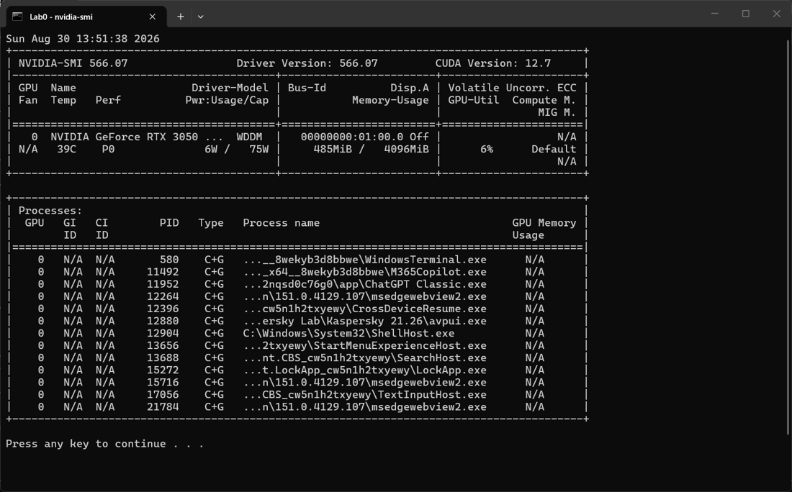
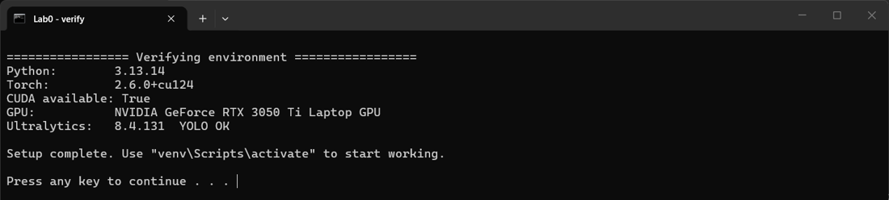
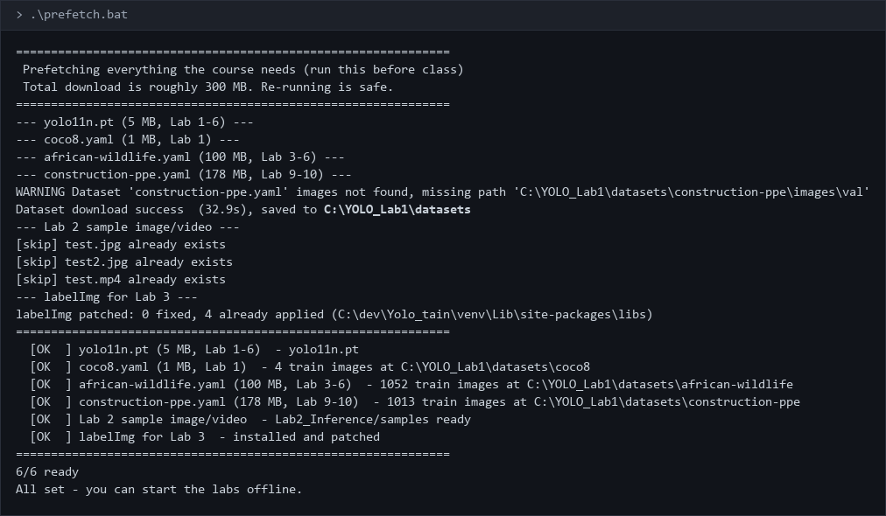

ดาวน์โหลดจาก python.org แล้วติดตั้งโดย ต้องติ๊ก "Add python.exe to PATH" ตอนติดตั้ง
python --version pip --version
อัปเดต NVIDIA Driver ให้ล่าสุดจาก nvidia.com แล้วตรวจสอบด้วยคำสั่ง
nvidia-smi

| ที่ต้องดู | อ่านว่าอย่างไร |
|---|---|
CUDA Version: 12.7(มุมขวาบน) |
เวอร์ชัน CUDA สูงสุดที่ไดรเวอร์ตัวนี้รองรับ ไม่ใช่เวอร์ชันที่ติดตั้งไว้ สังเกตว่าเลขนี้เป็น 12.7 แต่ setup_env.bat ติดตั้ง PyTorch ช่องทาง cu124 — ไม่ตรงกันแบบนี้ถูกต้องแล้ว ไม่ต้องแก้อะไร เพราะไดรเวอร์ที่รองรับ 12.7 ย่อมรันของที่สร้างด้วย 12.4 ได้ (backward compatible)ขอแค่เลขนี้ ไม่ต่ำกว่า 12.4 ก็พอ ถ้าต่ำกว่าให้อัปเดตไดรเวอร์จาก nvidia.com |
Driver Version: 566.07 |
เวอร์ชันไดรเวอร์ NVIDIA ที่ติดตั้งอยู่ |
485MiB / 4096MiB(Memory-Usage) |
VRAM ที่ใช้ไปแล้ว / ทั้งหมด — สังเกตว่ายังไม่ได้ทำอะไรเลยก็ถูกใช้ไปแล้ว 485 MiB จากโปรแกรมในตาราง Processes ด้านล่าง (เบราว์เซอร์, Terminal ฯลฯ) บนการ์ด 4 GB จึงเหลือให้เทรนจริงไม่ถึง 3.6 GB — เป็นเหตุผลที่เจอ CUDA out of memory ง่ายกว่าที่คิด ปิดเบราว์เซอร์ก่อนเทรนช่วยได้จริง |
ตาราง Processes |
รายการโปรแกรมที่กำลังใช้การ์ดจออยู่ ใช้ดูว่าอะไรกิน VRAM ของเราไป |
nvidia-smi แล้วขึ้น 'nvidia-smi' is not recognized... แปลว่าเครื่องไม่มีการ์ดจอ NVIDIA หรือยังไม่ได้ติดตั้งไดรเวอร์ — ยังเรียนต่อได้ สคริปต์จะติดตั้งแบบ CPU-only ให้อัตโนมัติ แค่ช้ากว่าในแล็บที่ต้อง Trainเปิดโฟลเดอร์ Lab0_Setup\scripts แล้วดับเบิลคลิก หรือพิมพ์คำสั่งใน Terminal:
cd Lab0_Setup\scripts .\setup_env.bat
.\ หน้าชื่อไฟล์ — ทุก Lab ในชุดนี้เขียนคำสั่งแบบนี้เหมือนกันหมดPS) จะไม่ยอมรันไฟล์ในโฟลเดอร์ปัจจุบันถ้าไม่ใส่ .\ จะขึ้น error ว่า:
setup_env.bat : The term 'setup_env.bat' is not recognized as the name of a cmdlet, function, script file, or operable program.เป็นกฎความปลอดภัยของ PowerShell (กันเผลอรันไฟล์แปลกปลอมที่ถูกวางไว้ในโฟลเดอร์) ไม่ใช่ว่าไฟล์หาย — ใส่
.\ แล้วรันได้ทันที และ .\ ก็ใช้ได้กับ Command Prompt (cmd.exe) เหมือนกัน จำแบบเดียวพอสคริปต์นี้จะ:
venvcu124) ถ้าพบ GPU — และถ้าติดตั้งไม่สำเร็จจะ fallback เป็น CPU-only อัตโนมัติultralytics (YOLO) และ opencv-pythoncheck_env.pynvidia-smi) รองรับ PyTorch cu124 ได้แม้ตัวเลขจะไม่ตรงกันเป๊ะ เพราะ CUDA เข้ากันได้แบบย้อนหลัง (backward compatible)setup_env.batสคริปต์ยาวสุดใน Lab ทั้งหมด แต่แบ่งเป็น 4 ช่วงตามที่ echo บอก
cd /d "%~dp0\..\.."
echo [1/4] Creating virtual environment (venv) ...
python -m venv venv
if errorlevel 1 (
echo ERROR: ไม่พบ python กรุณาติดตั้ง Python และเลือก "Add to PATH"
pause
exit /b 1
)
call venv\Scripts\activate.bat
| cd /d "%~dp0\..\.." | %~dp0 คือโฟลเดอร์ที่ไฟล์ .bat วางอยู่ แล้ว ..\.. ถอยขึ้น 2 ชั้นมาที่ Yolo_tain — venv จึงถูกสร้างที่โฟลเดอร์หลักเสมอ ไม่ใช่ในโฟลเดอร์ scripts |
| python -m venv venv | สร้าง Virtual Environment — Python ชุดแยกเฉพาะโปรเจกต์นี้ ไลบรารีที่ลงจะอยู่ในโฟลเดอร์ venv\ ไม่ปนกับ Python ของเครื่องทำแบบนี้เพื่อให้แต่ละโปรเจกต์ใช้เวอร์ชันไลบรารีต่างกันได้ และถ้าพังก็ลบ venv\ ทิ้งแล้วสร้างใหม่ได้โดยไม่กระทบอย่างอื่น |
| if errorlevel 1 | ด่านตรวจว่าเครื่องมี python ใน PATH ไหม — เป็นปัญหาอันดับหนึ่งของ Lab นี้ (ลืมติ๊ก "Add to PATH" ตอนติดตั้ง) |
echo [3/4] Detecting NVIDIA GPU ...
nvidia-smi >nul 2>&1
if %errorlevel%==0 (
pip install torch torchvision --index-url https://download.pytorch.org/whl/cu124
if errorlevel 1 (
echo WARNING: ติดตั้ง PyTorch แบบ CUDA ไม่สำเร็จ ... fallback เป็น CPU-only
pip install torch torchvision --index-url https://download.pytorch.org/whl/cpu
)
) else (
pip install torch torchvision --index-url https://download.pytorch.org/whl/cpu
)
| nvidia-smi >nul 2>&1 | เทคนิคที่ใช้บ่อย — รัน nvidia-smi แล้วโยนผลลัพธ์ทิ้งทั้งหมด (>nul ทิ้งข้อความปกติ, 2>&1 ทิ้งข้อความ error) เราไม่สนใจว่ามันพิมพ์อะไร สนแค่ว่ารันสำเร็จหรือไม่ ซึ่งดูจาก %errorlevel% — เป็นวิธีเช็คว่าเครื่องมีการ์ดจอ NVIDIA ไหม |
| --index-url ... | บอก pip ให้ไปโหลดจากคลังของ PyTorch ช่องทาง CUDA 12.4 แทนคลังกลาง (PyPI) — ถ้าไม่ระบุจะได้ PyTorch แบบ CPU-only ซึ่งใช้การ์ดจอไม่ได้เลย |
| if errorlevel 1 (fallback) | ด่านสำรอง ถ้าช่องทาง CUDA ไม่มี wheel สำหรับ Python เวอร์ชันที่ใช้ ก็ถอยไปติดตั้งแบบ CPU-only ให้อัตโนมัติ — เรียนต่อได้ แค่ช้าลง ดีกว่าค้างอยู่ตรงนั้น |
ช่วง [4/4] ติดตั้ง ultralytics กับ opencv-python แล้วเรียก check_env.py ตรวจผลให้เลย
ท้ายสุดสคริปต์จะเรียก check_env.py พิมพ์สรุปออกมาแบบนี้ — นี่คือหน้าจอที่ต้องดูว่าผ่านหรือไม่ผ่าน

| บรรทัด | ต้องเป็นอะไร |
|---|---|
Python: 3.13.14 | รองรับ 3.10-3.13 — ถ้าเป็น 3.14 ขึ้นไปอาจยังไม่มี wheel ของ PyTorch ให้ใช้ |
Torch: 2.6.0+cu124 | ต้องมี +cu124 ต่อท้าย ถ้าขึ้นเป็น 2.6.0+cpu แปลว่าไปติดตั้งแบบ CPU-only มา (fallback ทำงาน) จะใช้การ์ดจอไม่ได้ |
CUDA available: True | บรรทัดชี้เป็นชี้ตาย — ถ้าเป็น False ทั้งที่มีการ์ดจอ NVIDIA ต้องแก้ก่อนไปต่อ (ดู Troubleshooting ด้านล่าง) |
GPU: NVIDIA GeForce ... | ชื่อการ์ดที่ PyTorch มองเห็น — ต้องตรงกับที่เห็นใน nvidia-smi |
Ultralytics: 8.4.131 YOLO OK | คำว่า YOLO OK แปลว่า import YOLO สำเร็จ ไม่ใช่แค่ติดตั้งไฟล์ครบ |
setup_env.bat ใหม่:
cd C:\dev\Yolo_tain venv\Scripts\activate python Lab0_Setup\scripts\check_env.pyมีประโยชน์มากตอนสงสัยว่า venv เพี้ยนไปหรือเปล่า
CUDA available: False ทั้งที่มีการ์ดจอ NVIDIA ให้ตรวจสอบ Driver และลองรัน setup_env.bat ใหม่อีกครั้ง หรือแจ้งผู้สอน — ยังสามารถเรียนต่อได้ด้วย CPU (ช้าลงในแล็บที่ต้อง Train)cd Lab0_Setup\scripts .\prefetch.bat
สคริปต์จะโหลดทุกอย่างที่ใช้ตลอดคอร์สไว้ในเครื่อง แล้วสรุปให้ว่าครบไหม:
| ของที่โหลด | ขนาด | ใช้ใน |
|---|---|---|
yolo11n.pt โมเดลตั้งต้น | 5 MB | Lab 1-6 |
coco8 ชุดข้อมูลจิ๋ว | 1 MB | Lab 1 |
african-wildlife (buffalo/elephant/rhino/zebra) | 100 MB | Lab 3-6 |
construction-ppe (helmet/vest/…) | 178 MB | Lab 9-10 |
| ภาพและวิดีโอตัวอย่าง | 2 MB | Lab 2 |
labelImg พร้อม patch | 60 MB | Lab 3 |

6/6 ready และ All set ที่บรรทัดสุดท้าย[skip] หรือ already applied) ถ้าเน็ตหลุดกลางคันก็รันใหม่ได้เลย มันจะโหลดต่อเฉพาะส่วนที่ยังขาด[FAIL] ยังเข้าคลาสได้ ระบบจะโหลดให้เองตอนใช้งานจริง แค่ช้ากว่า| อาการ / ข้อความ Error | สาเหตุ | วิธีแก้ |
|---|---|---|
ERROR: Could not find a version that satisfies the requirement torch( No matching distribution found for torch) |
ช่องทางที่เลือก (เช่น cu121) ไม่มี wheel สำหรับ Python เวอร์ชันที่ใช้ — พบบ่อยกับ Python 3.13 |
ใช้ช่องทางที่ใหม่กว่า เช่น cu124 (สคริปต์เวอร์ชันนี้ตั้งค่าให้แล้ว) หรือลง Python 3.11 คู่ไว้แล้วสร้าง venv ด้วย 3.11 |
CUDA available: False ทั้งที่มีการ์ดจอ NVIDIA |
ติดตั้ง PyTorch แบบ CPU-only, ไดรเวอร์เก่า, หรือ venv เดิมยังค้างเวอร์ชัน CPU | อัปเดตไดรเวอร์จาก nvidia.com → ลบโฟลเดอร์ venv ทิ้ง → รัน setup_env.bat ใหม่ |
'python' is not recognized... |
ตอนติดตั้ง Python ไม่ได้ติ๊ก "Add to PATH" | ติดตั้ง Python ใหม่แล้วติ๊ก "Add python.exe to PATH" หรือใช้ py แทน python |
| ดาวน์โหลด torch ค้าง/หลุดกลางคัน (ไฟล์ ~2.5 GB) | เน็ตช้าหรือหลุด | รันสคริปต์ซ้ำได้เลย pip จะใช้ไฟล์ที่ cache ไว้ต่อ ไม่ต้องโหลดใหม่ทั้งหมด |
| โหลดโมเดลแล้ว CUDA out of memory ตอน Train (การ์ด VRAM น้อย เช่น 4 GB) | batch/รูปใหญ่เกินหน่วยความจำ GPU | ลด batch และ imgsz ในแล็บที่ Train (จะกล่าวถึงใน Lab4) |
python -c "import torch; print(torch.__version__, torch.cuda.is_available())"+cu124 และ Trueทุกครั้งที่เปิด Command Prompt ใหม่เพื่อทำงานกับโปรเจกต์นี้ ให้ Activate venv ก่อนเสมอ:
cd path\to\Yolo_tain venv\Scripts\activate
จะเห็น (venv) ขึ้นหน้าพรอมป์ แปลว่าพร้อมใช้งาน (ปิดด้วยคำสั่ง deactivate)
venv ถูกสร้างที่ root ของโปรเจกต์check_env.py แล้วไม่มี Error และเห็นเวอร์ชันของ Torch/Ultralytics